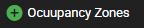
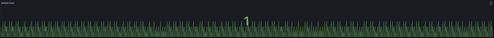
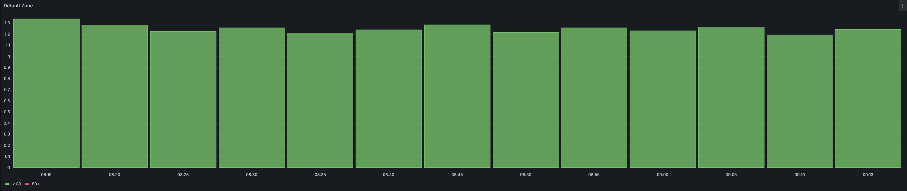
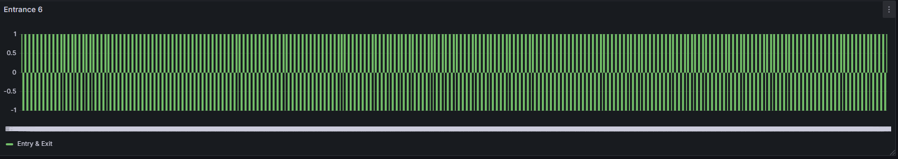
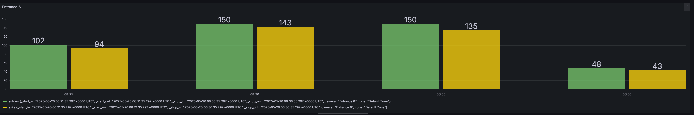

Occupancy counting
Occupancy counting using multiple cameras.
Access the Configuration Page
- Open your AXIS camera’s web interface:
Navigate to the camera’s IP address using your preferred web browser. - Go to the APP Section:
In the web interface, locate and click on the APP section. - Enable Occupancy counting:
Find Missing Feature ACAP, open it, and enable the Occupancy counting from the feature list. This will launch its configuration panel.
Configuration
Each zone can include multiple cameras and represents an area where occupancy is tracked collectively across all cameras.
Initial Zone Cannot Be Deleted
The first created zone is non-deletable because it is bound to the camera where the ACAP is installed.
Add Zone
Adding a new zone with the Plus Button.

Once a new zone is created, it requires configuration, including camera assignment and definition of counting rules.
Configure Zone
Zone Details
-
Zone Name
Enter or modify the name of the zone. This name should uniquely identify the area being monitored. -
Add Camera
Assign one or more cameras to the zone. A zone must have at least one camera to be valid.
Zone Settings
- Use Clear Event
Enable this option to allow a configured event to reset the zone’s occupancy count. -
Configure Clear Event: Select the event that resets occupancy. Required if "Use Clear Event" is enabled.
-
Use Loitering Alert
Enable to trigger an alert if no exit occurs after an entry within a defined time window. -
Loitering Timeout (seconds): The time in seconds after which the loitering alert is triggered if no exit event is received.
-
Use Thresholds
Enable to define warning and maximum occupancy levels that can trigger additional actions. - Warn Level: The occupancy count at which a warning should be triggered.
- Max Level: The maximum allowable occupancy. Exceeding this can trigger critical alerts.
Configure Camera
Each camera must be properly configured and assigned zone triggers in order to function in the occupancy system.
-
Name
Enter a unique name for the camera. -
IP Address
Specify the IP address of the camera. -
Username
Enter the username used to authenticate with the camera. -
Password
Enter the password for camera authentication. -
HTTPS
Toggle to enable or disable HTTPS connection for the camera.
Zone Triggers
Assign zone trigger roles and associated events for entry and exit.
- Role: Entry
Select the event that increases the zone occupancy count. -
Configure Entry: Choose an entry event. Required for zone entry tracking.
-
Role: Exit
Select the event that decreases the zone occupancy count. -
Configure Exit: Choose an exit event. Required for zone exit tracking.
-
🗑️ Trash Icon: Use this to remove a specific entry or exit trigger from the configuration.
Validation Errors
Displayed at the bottom of the screen if input validation fails:
-
🔴 "A occupancy zone must have at least one camera!"
→ Ensure at least one camera is assigned before saving the zone. -
🔴 "An event on New Camera must be selected!"
→ At least one entry or exit event must be configured. -
🔴 "One or more fields are invalid"
→ Check all required fields (such as zone name, event configurations) for correctness. -
🔴 "Camera must have at least one event trigger"
→ Add a zone trigger to camera, via the plus circle button (green).
Occupancy Monitor
Displays the current occupancy count of each zone in real time. Useful for visual monitoring of zone status and threshold violations.
Zone Display
Each zone is shown with:
-
Zone Name
The name of the configured zone (e.g., Default Zone). -
Occupancy Count
The current number of detected occupants in the zone. -
Threshold Indicators
- Warn Level: Displayed as a label (e.g., 8 Warn)
- Max Level: Displayed as a label (e.g., 10 Max)
These levels are set in the zone settings and indicate when the zone is approaching or exceeding occupancy limits, only visible when thresholds are enabled.
Manual Adjustment Controls
-
➖ Decrease Button
Decreases the occupancy count manually. Useful for testing or administrative overrides. -
➕ Increase Button
Increases the occupancy count manually.
InfluxDB / Grafana Flux Functions
This section provides a set of ready-to-use Flux functions to simplify querying metadata in InfluxDB — such as zone occupancy, camera activity, and entry/exit counts.
Each function can be customized by changing a few variables at the top (like bucket name, zone, camera, or time window), making it easy to reuse these in Grafana panels without writing full queries from scratch.
Occupancy Count for a Specific Zone
This function returns the occupancy values for a specific zone like (e.g., "Default Zone"), by joining zone and occupancy fields over time.

// === CONFIGURATION ===
option bucket = "occ" // Change this
option zoneName = "Default Zone" // Change this
// === FUNCTION ===
getZoneOccupancy = (bucket, zoneName) => {
zoneStream = from(bucket: bucket)
|> range(start: v.timeRangeStart, stop: v.timeRangeStop)
|> filter(fn: (r) => r["_measurement"] == "metadata")
|> filter(fn: (r) => r["_field"] == "zone")
|> filter(fn: (r) => r["_value"] == zoneName)
occupancyStream = from(bucket: bucket)
|> range(start: v.timeRangeStart, stop: v.timeRangeStop)
|> filter(fn: (r) => r["_measurement"] == "metadata")
|> filter(fn: (r) => r["_field"] == "occupancy")
return join(
tables: {zone: zoneStream, occ: occupancyStream},
on: ["_time"]
)
|> keep(columns: ["_time", "_value_zone", "_value_occ"])
|> rename(columns: {
"_value_occ": "occupancy",
"_value_zone": "zone"
})
}
// === CALL ===
getZoneOccupancy(bucket: bucket, zoneName: zoneName)
Occupancy Aggregation
This function returns the aggregated occupancy value for a specified zone from a given bucket, using a configurable aggregation window (e.g., every 5 minutes). It automatically joins zone and occupancy data based on timestamps and calculates the average (mean) occupancy in each time interval.

💡 You can change the aggregation function from
meantosum,max,min, etc. if needed.
// === CONFIGURATION ===
option bucket = "occ" // The InfluxDB bucket name
option zoneName = "Default Zone" // The zone you want to analyze
option aggWindow = 5m // Aggregation time window
// === FUNCTION ===
getZoneOccupancy = (bucket, zoneName, aggWindow) => {
zoneStream = from(bucket: bucket)
|> range(start: v.timeRangeStart, stop: v.timeRangeStop)
|> filter(fn: (r) => r["_measurement"] == "metadata")
|> filter(fn: (r) => r["_field"] == "zone")
|> filter(fn: (r) => r["_value"] == zoneName)
occupancyStream = from(bucket: bucket)
|> range(start: v.timeRangeStart, stop: v.timeRangeStop)
|> filter(fn: (r) => r["_measurement"] == "metadata")
|> filter(fn: (r) => r["_field"] == "occupancy")
return join(
tables: {zone: zoneStream, occ: occupancyStream},
on: ["_time"]
)
|> keep(columns: ["_time", "_value_zone", "_value_occ"])
|> rename(columns: {
"_value_occ": "occupancy",
"_value_zone": "zone"
})
|> map(fn: (r) => ({ r with _value: r.occupancy }))
|> group(columns: ["zone"])
|> aggregateWindow(every: aggWindow, fn: mean, createEmpty: false)
|> rename(columns: { _value: "occupancy" })
}
// === CALL FUNCTION ===
getZoneOccupancy(bucket: bucket, zoneName: zoneName, aggWindow: aggWindow)
Zone Camera change
This function filters and joins the camera, zone, and change fields by time to return all raw change events for a specific camera and zone.

// === CONFIGURATION ===
option bucket = "occ" // Change this
option cameraName = "Entrance 6" // Change this
option zoneName = "Default Zone" // Change this
// === FUNCTION ===
getZoneCameraChangeEvents = (bucket, cameraName, zoneName) => {
cameraStream = from(bucket: bucket)
|> range(start: v.timeRangeStart, stop: v.timeRangeStop)
|> filter(fn: (r) => r["_measurement"] == "metadata")
|> filter(fn: (r) => r["_field"] == "camera")
|> filter(fn: (r) => r["_value"] == cameraName)
zoneStream = from(bucket: bucket)
|> range(start: v.timeRangeStart, stop: v.timeRangeStop)
|> filter(fn: (r) => r["_measurement"] == "metadata")
|> filter(fn: (r) => r["_field"] == "zone")
|> filter(fn: (r) => r["_value"] == zoneName)
changeStream = from(bucket: bucket)
|> range(start: v.timeRangeStart, stop: v.timeRangeStop)
|> filter(fn: (r) => r["_measurement"] == "metadata")
|> filter(fn: (r) => r["_field"] == "change")
zoneCamera = join(
tables: {cam: cameraStream, zone: zoneStream},
on: ["_time"]
)
finalJoin = join(
tables: {zc: zoneCamera, chg: changeStream},
on: ["_time"]
)
|> keep(columns: ["_time", "_value_cam", "_value_zone", "_value"])
|> rename(columns: {
"_value_cam": "camera",
"_value_zone": "zone",
"_value": "change"
})
return finalJoin
}
// === CALL ===
getZoneCameraChangeEvents(bucket: bucket, cameraName: cameraName, zoneName: zoneName)
Counting Aggregation
This Flux function aggregates entry (+1) and exit (-1) events for a specified camera and zone over a configurable time window.
It returns the number of entries and exits grouped by time, camera, and zone.

💡 You can change the aggregation function from
meantosum,max,min, etc. if needed.
// === CONFIGURATION ===
option bucket = "occ" // Change this
option cameraName = "Entrance 7" // Change this
option zoneName = "Default Zone" // Change this
option aggWindow = 5m // Change this
// === FUNCTION ===
getEntryExitCounts = (bucket, cameraName, zoneName, aggWindow) => {
cameraStream = from(bucket: bucket)
|> range(start: v.timeRangeStart, stop: v.timeRangeStop)
|> filter(fn: (r) => r["_measurement"] == "metadata")
|> filter(fn: (r) => r["_field"] == "camera")
|> filter(fn: (r) => r["_value"] == cameraName)
zoneStream = from(bucket: bucket)
|> range(start: v.timeRangeStart, stop: v.timeRangeStop)
|> filter(fn: (r) => r["_measurement"] == "metadata")
|> filter(fn: (r) => r["_field"] == "zone")
|> filter(fn: (r) => r["_value"] == zoneName)
changeStream = from(bucket: bucket)
|> range(start: v.timeRangeStart, stop: v.timeRangeStop)
|> filter(fn: (r) => r["_measurement"] == "metadata")
|> filter(fn: (r) => r["_field"] == "change")
zoneCamera = join(
tables: {cam: cameraStream, zone: zoneStream},
on: ["_time"]
)
finalJoin = join(
tables: {zc: zoneCamera, chg: changeStream},
on: ["_time"]
)
|> keep(columns: ["_time", "_value_cam", "_value_zone", "_value"])
|> rename(columns: {
"_value_cam": "camera",
"_value_zone": "zone",
"_value": "change"
})
entryStream = finalJoin
|> filter(fn: (r) => r.change == 1)
|> map(fn: (r) => ({ r with _value: 1 }))
|> group(columns: ["camera", "zone"])
|> aggregateWindow(every: aggWindow, fn: count, createEmpty: false)
|> rename(columns: { _value: "entries" })
exitStream = finalJoin
|> filter(fn: (r) => r.change == -1)
|> map(fn: (r) => ({ r with _value: 1 }))
|> group(columns: ["camera", "zone"])
|> aggregateWindow(every: aggWindow, fn: count, createEmpty: false)
|> rename(columns: { _value: "exits" })
return join(
tables: {in: entryStream, out: exitStream},
on: ["_time", "camera", "zone"]
)
}
// === CALL FUNCTION ===
getEntryExitCounts(bucket: bucket, cameraName: cameraName, zoneName: zoneName, aggWindow: aggWindow)